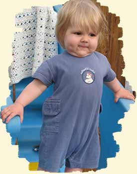

Family style care
The heart of the LifeWays approach is the "family suite", a small community of mixed aged children who stay together over an extended period, playing and learning together in a home-like environment.
Preschool program
- A consistent daily routine is followed. Rest times and meal times are the same each day, and outdoor time is a central focus in any but the most inclement weather.
- A cycle of seasonal activities is followed throughout the year. We have a welcome BBQ in the fall, followed by Harvest Tide, a Festival of Light, Mayfair, and "Graduation Ceremonies" in the summer for those who are leaving to attend Kindergarten.
- The children keep a garden and are involved in the planting, tending and harvesting of their own seeds. Each child cultivates their own pumpkin each year.
- A variety of practical life skills and seasonal activities are offered through creative play, household tasks, food preparation, water play, nature exploration, and artistic expression.
- Literacy is fostered through storytelling, puppetry, and music. The children attend library programs throughout the year as well.
- In addition to the library, we go on nature walks, have picnics, play at the park or visit the farmer's market.

Infant and toddler program
- Young children benefit from plenty of one on one time, both on the floor and being carried and held.
- Nursing mothers are always welcome to make routine visits to nurse their children.
- Immobile infants are provided with a baby gym, and their own basket of developmentally appropriate toys.
- As they become more mobile,the toys are exchanged to encourage the next developmental stage.They are given ample opportunity to explore their sense of movement, gradually becoming more involved in the activities of the older children as they become interested in doing so.
- Toddlers enjoy circle time and music with the older children, learning the words and actions by following them.
- By the age of 30 months, most young children are fully participating in the preschool program.